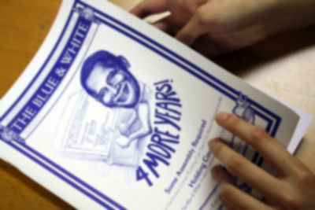

Julie为哥大设计校刊，以校友奥巴马为封面
2012年是哥伦比亚大学100周年校庆，刚刚入学的哥大新生——莎伦校友Julie的设计，被哥大校刊选作100年庆的封面。她的设计以同为哥大校友——奥巴马总统为主角。
这一年也是奥巴马总统连任的日子，她的其他作品亦被选入100年校刊中⋯ 大一放暑假，Julie马上去了非洲，加入一个慈善机构的队伍当中，负责产品设计，这些产品义卖的收入将用以非洲慈善工作的开展。行色匆匆的Julie还来不及向刘莎伦老师告別，特地请母亲打来电话，向刘老师汇报她的行程⋯是个窝心的孩子。
在申请大学时，Julie同时被全美最顶尖的罗得岛设计学院录取，以及长春藤盟校中艺术最好的康奈尔大学美术建筑规划学院录取。她选择进哥伦比亚大学就读商业，未来打算从事与艺术有关的商业活动。这也是刘莎伦老师早前给她的建议。对于能同时从事这两项自己锺爱的工作，她非常高兴。
Julie有一位非常聪明有远见的母亲Sherry，9岁时就送她来画院，同行的三位孩子没多久都一一放弃，（现在州立大学就读）。虽然学画的过程中也有很多挫折，但她最终仍走出一片天地。Sherry调教出的另一个孩子，Julie的哥哥，从耶鲁大学毕业，目前在著名的Bain金融投资公司任职，该公司的前任总裁为总统候选人逻目尼。